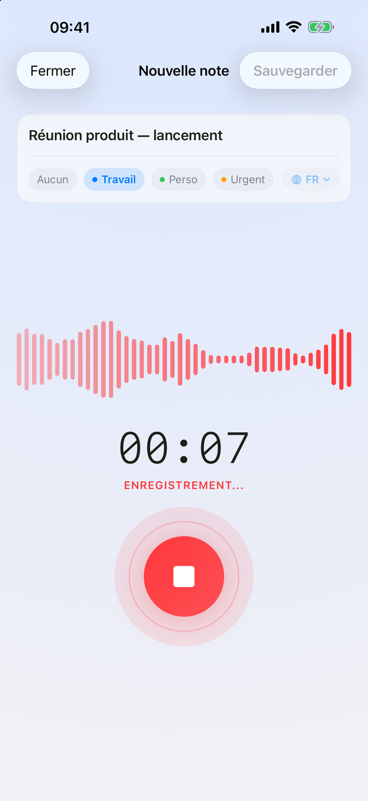

Sur l'App Store · iPhone, iPad et Apple Watch
Enregistre une réunion, une idée ou un cours. NotaVox transcrit, résume, et fait ressortir les décisions et les actions — sur ton appareil, sans jamais passer par un serveur.
4,99 € · achat unique · tout est inclus

Trois étapes
Tu appuies une fois. Le reste s'enchaîne pendant que tu passes à autre chose.
Un appui sur le bouton rouge. NotaVox capte la voix, affiche la forme d'onde et le minuteur ; l'écran peut se verrouiller.
La transcription arrive seule à la fin de l'enregistrement, avec un résumé et les actions repérées dans le texte.
Résumé, décisions, actions, questions ouvertes : quatre blocs à partager ou à envoyer dans Rappels.
Ce que fait l'app
Un appui pour lancer, rien à régler.
Quatre langues, une par enregistrement.
Le compte-rendu intelligent découpe une réunion en quatre blocs.
Enregistre au poignet, la note arrive sur l'iPhone.
Plusieurs notes éparses deviennent une seule note claire.
Une note se retrouve en quelques secondes, même six mois après.
Dans l'app


Sur l'appareil
NotaVox n'a pas de serveur, pas de compte, pas de clé d'API. Tes réunions, tes idées et tes cours restent chez toi : c'est ce qui distingue l'app des services de transcription en ligne.
Enregistrements, transcriptions et rubriques vivent sur ton appareil. NotaVox n'a pas de serveur : rien ne m'est envoyé.
Sur iOS 26, la transcription tourne entièrement sur l'appareil, sans limite de durée et sans réseau. Sur iOS 18 à 25, elle passe par le service de reconnaissance vocale d'Apple.
Compte-rendu, reformulation, fusion et questions s'exécutent via le modèle du système, sur l'appareil.
Le prix
Pas d'abonnement, pas d'achat intégré, pas de crédits à recharger. Tu achètes l'app une fois, et toutes les fonctions sont là dès la première ouverture.
4,99 €achat unique
Tout ce que fait NotaVox, sans rien à débloquer ensuite.
Le compte-rendu, la fusion intelligente et les questions demandent Apple Intelligence (iOS 26 sur un appareil compatible). Sur un appareil qui ne le gère pas, l'app l'indique ; l'enregistrement, la transcription, la montre et l'organisation fonctionnent normalement.
Support
Une question, un bug, une idée :
sramezani52@gmail.comRéponse sous 2 à 3 jours ouvrés, en français ou en anglais.
Dans l'app, sur ton appareil. NotaVox n'a pas de serveur : rien n'est envoyé au développeur. Supprimer une note supprime son fichier audio ; désinstaller l'app supprime tout.
Tout. L'app s'achète une fois 4,99 € sur l'App Store et il n'y a plus rien à payer ensuite : ni abonnement, ni achat intégré, ni crédits. Les mises à jour sont comprises, et l'app fonctionne sur ton iPhone, ton iPad et ton Apple Watch avec le même achat.
Cette fonction utilise Apple Intelligence, qui demande iOS 26 sur un appareil compatible. Ailleurs, la carte reste visible et indique que la fonction n'est pas disponible ; l'enregistrement, la transcription, l'organisation et la montre fonctionnent normalement.
Non. L'app est liée à ton identifiant Apple : ouvre l'App Store, va dans ton compte, « Achetés », et retélécharge NotaVox. Le partage familial fonctionne aussi.
Ouvre NotaVox sur la montre et touche le micro. À l'arrêt, l'enregistrement part vers l'iPhone, qui le transcrit et crée la note — même si l'app y est fermée. Si le téléphone est loin, le transfert attend et repart tout seul.
Deux endroits : le sélecteur sur l'écran d'enregistrement, pour une note en particulier, et Réglages → Transcription → Langue par défaut, pour toutes les suivantes. Une note est transcrite dans une seule langue : choisis celle qui est parlée. La langue de l'interface se règle au même endroit, indépendamment de celle de l'appareil.
Sur iOS 26, non : elle se fait entièrement sur l'appareil, quelle que soit la durée. Sur iOS 18 à 25, elle utilise le service de reconnaissance vocale d'Apple, qui peut traiter l'audio sur les serveurs d'Apple selon la langue. Le compte-rendu, lui, reste toujours sur l'appareil, et rien ne part jamais chez le développeur.
L'achat passe par Apple, et le remboursement aussi : rends-toi sur reportaproblem.apple.com avec ton identifiant Apple. Écris-moi si ça bloque, je t'aiderai à monter la demande.